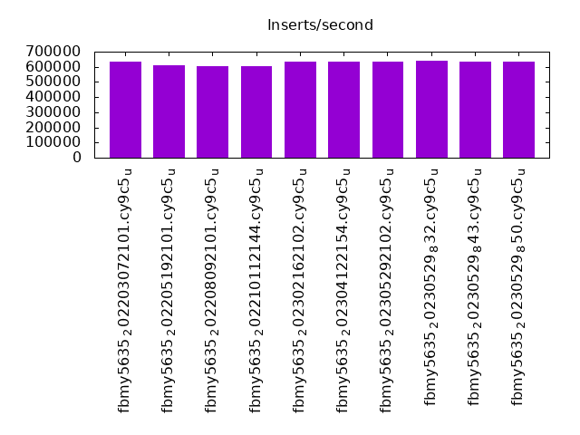
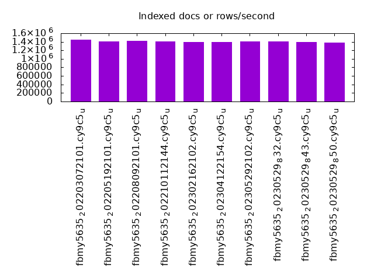
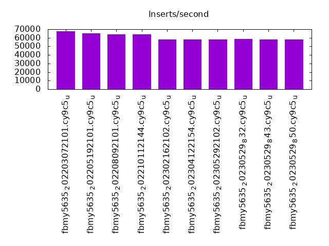
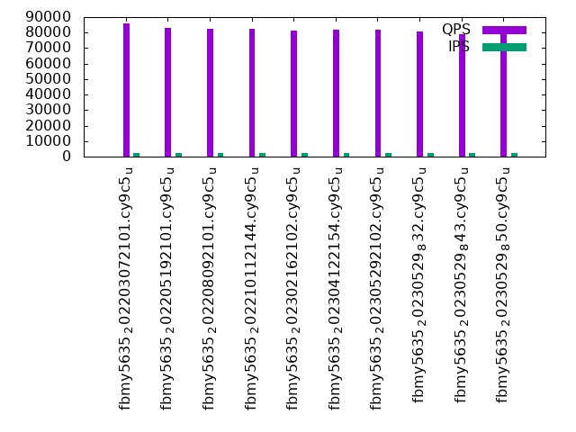
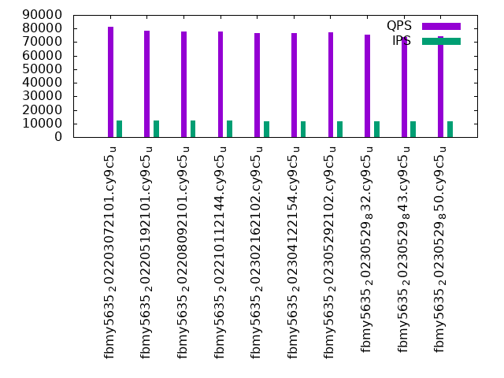
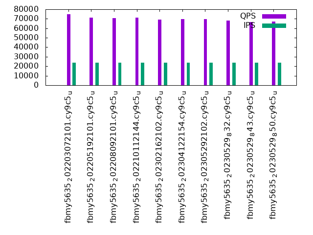

This is a report for the insert benchmark with 12000M docs and 24 client(s). It is generated by scripts (bash, awk, sed) and Tufte might not be impressed. An overview of the insert benchmark is here and a short update is here. Below, by DBMS, I mean DBMS+version.config. An example is my8020.c10b40 where my means MySQL, 8020 is version 8.0.20 and c10b40 is the name for the configuration file.
The test server has 80 cores, hyperthreads enabled, 256G RAM and fast NVMe with XFS. The benchmark was run with 24 clients and there were 1 or 3 connections per client (1 for queries or inserts without rate limits, 1+1 for rate limited inserts+deletes). There are 24 tables, with a client per table. It loads 500M rows per-table without secondary indexes, creates secondary indexes, then inserts 50M rows per-table with a delete per insert to avoid growing the table. It then does 3 read+write tests for 3600s each that do queries as fast as possible with 100, 500 and then 1000 inserts/second/client concurrent with the queries and 1000 deletes/second to avoid growing the table. The database is larger than memory.
The tested DBMS are:
The numbers are inserts/s for l.i0 and l.i1, indexed docs (or rows) /s for l.x and queries/s for q100, q500, q1000. The values are the average rate over the entire test for inserts (IPS) and queries (QPS). The range of values for IPS and QPS is split into 3 parts: bottom 25%, middle 50%, top 25%. Values in the bottom 25% have a red background, values in the top 25% have a green background and values in the middle have no color. A gray background is used for values that can be ignored because the DBMS did not sustain the target insert rate. Red backgrounds are not used when the minimum value is within 80% of the max value.
| dbms | l.i0 | l.x | l.i1 | q100.1 | q500.1 | q1000.1 |
|---|---|---|---|---|---|---|
| fbmy5635_202203072101.cy9c5_u | 633279 | 1447888 | 67839 | 85825 | 81396 | 74690 |
| fbmy5635_202205192101.cy9c5_u | 611839 | 1410615 | 64918 | 82795 | 78354 | 71104 |
| fbmy5635_202208092101.cy9c5_u | 605999 | 1415440 | 64260 | 82368 | 77883 | 70878 |
| fbmy5635_202210112144.cy9c5_u | 604108 | 1409455 | 64144 | 82498 | 77681 | 70968 |
| fbmy5635_202302162102.cy9c5_u | 635526 | 1396985 | 57895 | 81526 | 76543 | 69227 |
| fbmy5635_202304122154.cy9c5_u | 634753 | 1392608 | 58002 | 82130 | 76638 | 69574 |
| fbmy5635_202305292102.cy9c5_u | 633012 | 1412441 | 57898 | 82115 | 77186 | 69814 |
| fbmy5635_20230529_832.cy9c5_u | 640205 | 1402536 | 58477 | 80494 | 75309 | 68239 |
| fbmy5635_20230529_843.cy9c5_u | 633513 | 1398776 | 58244 | 78885 | 74008 | 66478 |
| fbmy5635_20230529_850.cy9c5_u | 636638 | 1387616 | 58204 | 78975 | 74317 | 67062 |
This table has relative throughput, throughput for the DBMS relative to the DBMS in the first line, using the absolute throughput from the previous table. Values less than 0.95 have a yellow background. Values greater than 1.05 have a blue background.
| dbms | l.i0 | l.x | l.i1 | q100.1 | q500.1 | q1000.1 |
|---|---|---|---|---|---|---|
| fbmy5635_202203072101.cy9c5_u | 1.00 | 1.00 | 1.00 | 1.00 | 1.00 | 1.00 |
| fbmy5635_202205192101.cy9c5_u | 0.97 | 0.97 | 0.96 | 0.96 | 0.96 | 0.95 |
| fbmy5635_202208092101.cy9c5_u | 0.96 | 0.98 | 0.95 | 0.96 | 0.96 | 0.95 |
| fbmy5635_202210112144.cy9c5_u | 0.95 | 0.97 | 0.95 | 0.96 | 0.95 | 0.95 |
| fbmy5635_202302162102.cy9c5_u | 1.00 | 0.96 | 0.85 | 0.95 | 0.94 | 0.93 |
| fbmy5635_202304122154.cy9c5_u | 1.00 | 0.96 | 0.85 | 0.96 | 0.94 | 0.93 |
| fbmy5635_202305292102.cy9c5_u | 1.00 | 0.98 | 0.85 | 0.96 | 0.95 | 0.93 |
| fbmy5635_20230529_832.cy9c5_u | 1.01 | 0.97 | 0.86 | 0.94 | 0.93 | 0.91 |
| fbmy5635_20230529_843.cy9c5_u | 1.00 | 0.97 | 0.86 | 0.92 | 0.91 | 0.89 |
| fbmy5635_20230529_850.cy9c5_u | 1.01 | 0.96 | 0.86 | 0.92 | 0.91 | 0.90 |
This lists the average rate of inserts/s for the tests that do inserts concurrent with queries. For such tests the query rate is listed in the table above. The read+write tests are setup so that the insert rate should match the target rate every second. Cells that are not at least 95% of the target have a red background to indicate a failure to satisfy the target.
| dbms | q100.1 | q500.1 | q1000.1 |
|---|---|---|---|
| fbmy5635_202203072101.cy9c5_u | 2381 | 11907 | 23821 |
| fbmy5635_202205192101.cy9c5_u | 2381 | 11907 | 23828 |
| fbmy5635_202208092101.cy9c5_u | 2381 | 11904 | 23828 |
| fbmy5635_202210112144.cy9c5_u | 2381 | 11907 | 23821 |
| fbmy5635_202302162102.cy9c5_u | 2374 | 11871 | 23749 |
| fbmy5635_202304122154.cy9c5_u | 2377 | 11884 | 23756 |
| fbmy5635_202305292102.cy9c5_u | 2375 | 11871 | 23736 |
| fbmy5635_20230529_832.cy9c5_u | 2376 | 11878 | 23743 |
| fbmy5635_20230529_843.cy9c5_u | 2377 | 11884 | 23756 |
| fbmy5635_20230529_850.cy9c5_u | 2379 | 11891 | 23769 |
| target | 2400 | 12000 | 24000 |
l.i0: load without secondary indexes. Graphs for performance per 1-second interval are here.
Average throughput:
Insert response time histogram: each cell has the percentage of responses that take <= the time in the header and max is the max response time in seconds. For the max column values in the top 25% of the range have a red background and in the bottom 25% of the range have a green background. The red background is not used when the min value is within 80% of the max value.
| dbms | 256us | 1ms | 4ms | 16ms | 64ms | 256ms | 1s | 4s | 16s | gt | max |
|---|---|---|---|---|---|---|---|---|---|---|---|
| fbmy5635_202203072101.cy9c5_u | 0.017 | 74.881 | 25.059 | 0.004 | 0.040 | nonzero | 0.401 | ||||
| fbmy5635_202205192101.cy9c5_u | 0.011 | 67.565 | 32.381 | 0.003 | 0.041 | nonzero | 0.363 | ||||
| fbmy5635_202208092101.cy9c5_u | 0.010 | 65.970 | 33.978 | 0.003 | 0.040 | nonzero | 0.366 | ||||
| fbmy5635_202210112144.cy9c5_u | 0.011 | 65.110 | 34.836 | 0.003 | 0.040 | nonzero | 0.292 | ||||
| fbmy5635_202302162102.cy9c5_u | 0.007 | 76.096 | 23.853 | 0.002 | 0.041 | 0.176 | |||||
| fbmy5635_202304122154.cy9c5_u | 0.008 | 75.319 | 24.629 | 0.002 | 0.042 | 0.237 | |||||
| fbmy5635_202305292102.cy9c5_u | 0.006 | 75.466 | 24.485 | 0.002 | 0.041 | nonzero | 0.325 | ||||
| fbmy5635_20230529_832.cy9c5_u | 0.005 | 77.525 | 22.427 | 0.003 | 0.040 | 0.254 | |||||
| fbmy5635_20230529_843.cy9c5_u | 0.005 | 75.147 | 24.805 | 0.002 | 0.041 | nonzero | 0.353 | ||||
| fbmy5635_20230529_850.cy9c5_u | 0.004 | 76.998 | 22.943 | 0.010 | 0.046 | 0.237 |
Performance metrics for the DBMS listed above. Some are normalized by throughput, others are not. Legend for results is here.
ips qps rps rmbps wps wmbps rpq rkbpq wpi wkbpi csps cpups cspq cpupq dbgb1 dbgb2 rss maxop p50 p99 tag 633279 0 11 0.2 3327.8 366.0 0.000 0.000 0.005 0.592 485180 42.2 0.766 53 376.5 377.8 170.6 0.401 26573 17083 12000m.fbmy5635_202203072101.cy9c5_u 611839 0 20 0.5 3199.2 356.2 0.000 0.001 0.005 0.596 494213 42.5 0.808 56 376.4 377.9 169.9 0.363 25675 16883 12000m.fbmy5635_202205192101.cy9c5_u 605999 0 11 0.2 3139.5 351.1 0.000 0.000 0.005 0.593 484949 42.0 0.800 55 376.4 377.8 167.7 0.366 25474 16783 12000m.fbmy5635_202208092101.cy9c5_u 604108 0 15 0.3 3165.1 356.5 0.000 0.000 0.005 0.604 485062 42.1 0.803 56 376.5 378.0 169.7 0.292 25375 16184 12000m.fbmy5635_202210112144.cy9c5_u 635526 0 41 0.4 2160.9 237.7 0.000 0.001 0.003 0.383 261223 35.9 0.411 45 376.2 377.6 99.6 0.176 26973 21179 12000m.fbmy5635_202302162102.cy9c5_u 634753 0 47 0.5 2138.8 234.8 0.000 0.001 0.003 0.379 260430 35.8 0.410 45 376.2 377.6 98.6 0.237 26773 21479 12000m.fbmy5635_202304122154.cy9c5_u 633012 0 42 0.5 2133.8 236.3 0.000 0.001 0.003 0.382 281333 36.5 0.444 46 376.4 377.7 98.6 0.325 26773 21279 12000m.fbmy5635_202305292102.cy9c5_u 640205 0 43 0.5 2153.7 238.0 0.000 0.001 0.003 0.381 308274 39.1 0.482 49 376.3 377.6 98.4 0.254 27173 20779 12000m.fbmy5635_20230529_832.cy9c5_u 633513 0 62 0.6 2128.4 234.7 0.000 0.001 0.003 0.379 310643 39.5 0.490 50 376.4 377.7 98.2 0.353 26873 20380 12000m.fbmy5635_20230529_843.cy9c5_u 636638 0 199 1.3 2135.4 235.4 0.000 0.002 0.003 0.379 293754 38.9 0.461 49 376.3 377.6 97.8 0.237 27073 20277 12000m.fbmy5635_20230529_850.cy9c5_u
l.x: create secondary indexes.
Average throughput:
Performance metrics for the DBMS listed above. Some are normalized by throughput, others are not. Legend for results is here.
ips qps rps rmbps wps wmbps rpq rkbpq wpi wkbpi csps cpups cspq cpupq dbgb1 dbgb2 rss maxop p50 p99 tag 1447888 0 8250 213.5 1764.0 181.6 0.006 0.151 0.001 0.128 41693 30.3 0.029 17 772.1 773.4 207.0 0.005 NA NA 12000m.fbmy5635_202203072101.cy9c5_u 1410615 0 6709 209.8 1721.8 175.5 0.005 0.152 0.001 0.127 40595 30.1 0.029 17 772.0 773.5 207.0 0.004 NA NA 12000m.fbmy5635_202205192101.cy9c5_u 1415440 0 7654 210.1 1727.4 177.6 0.005 0.152 0.001 0.128 40876 30.2 0.029 17 772.0 773.4 207.0 0.003 NA NA 12000m.fbmy5635_202208092101.cy9c5_u 1409455 0 6322 209.1 1719.9 177.4 0.004 0.152 0.001 0.129 42432 30.2 0.030 17 772.0 773.5 207.0 0.003 NA NA 12000m.fbmy5635_202210112144.cy9c5_u 1396985 0 9474 201.0 1704.9 169.6 0.007 0.147 0.001 0.124 39465 29.8 0.028 17 771.8 773.1 208.8 0.002 NA NA 12000m.fbmy5635_202302162102.cy9c5_u 1392608 0 7166 204.8 1699.2 174.0 0.005 0.151 0.001 0.128 40025 29.8 0.029 17 771.8 773.1 208.8 0.005 NA NA 12000m.fbmy5635_202304122154.cy9c5_u 1412441 0 8497 208.5 1723.8 174.6 0.006 0.151 0.001 0.127 39023 29.9 0.028 17 771.9 773.3 208.8 0.003 NA NA 12000m.fbmy5635_202305292102.cy9c5_u 1402536 0 7697 207.2 1714.0 170.1 0.005 0.151 0.001 0.124 47651 31.0 0.034 18 771.9 773.2 208.6 0.003 NA NA 12000m.fbmy5635_20230529_832.cy9c5_u 1398776 0 7391 206.1 1708.5 170.6 0.005 0.151 0.001 0.125 51057 30.9 0.037 18 771.9 773.3 208.7 0.003 NA NA 12000m.fbmy5635_20230529_843.cy9c5_u 1387616 0 5559 206.7 1699.2 167.2 0.004 0.153 0.001 0.123 48870 30.9 0.035 18 771.9 773.2 208.7 0.003 NA NA 12000m.fbmy5635_20230529_850.cy9c5_u
l.i1: continue load after secondary indexes created. Graphs for performance per 1-second interval are here.
Average throughput:
Insert response time histogram: each cell has the percentage of responses that take <= the time in the header and max is the max response time in seconds. For the max column values in the top 25% of the range have a red background and in the bottom 25% of the range have a green background. The red background is not used when the min value is within 80% of the max value.
| dbms | 256us | 1ms | 4ms | 16ms | 64ms | 256ms | 1s | 4s | 16s | gt | max |
|---|---|---|---|---|---|---|---|---|---|---|---|
| fbmy5635_202203072101.cy9c5_u | nonzero | 0.040 | 27.431 | 72.520 | 0.008 | 0.125 | |||||
| fbmy5635_202205192101.cy9c5_u | 0.033 | 21.368 | 78.591 | 0.008 | 0.143 | ||||||
| fbmy5635_202208092101.cy9c5_u | 0.038 | 20.205 | 79.751 | 0.006 | 0.132 | ||||||
| fbmy5635_202210112144.cy9c5_u | 0.034 | 20.051 | 79.908 | 0.008 | 0.126 | ||||||
| fbmy5635_202302162102.cy9c5_u | 0.035 | 11.916 | 88.028 | 0.021 | 0.161 | ||||||
| fbmy5635_202304122154.cy9c5_u | 0.035 | 11.852 | 88.094 | 0.019 | 0.200 | ||||||
| fbmy5635_202305292102.cy9c5_u | 0.044 | 11.863 | 88.074 | 0.020 | 0.178 | ||||||
| fbmy5635_20230529_832.cy9c5_u | 0.033 | 13.071 | 86.884 | 0.012 | 0.199 | ||||||
| fbmy5635_20230529_843.cy9c5_u | 0.039 | 12.856 | 87.090 | 0.015 | 0.179 | ||||||
| fbmy5635_20230529_850.cy9c5_u | 0.029 | 12.560 | 87.400 | 0.010 | 0.209 |
Delete response time histogram: each cell has the percentage of responses that take <= the time in the header and max is the max response time in seconds. For the max column values in the top 25% of the range have a red background and in the bottom 25% of the range have a green background. The red background is not used when the min value is within 80% of the max value.
| dbms | 256us | 1ms | 4ms | 16ms | 64ms | 256ms | 1s | 4s | 16s | gt | max |
|---|---|---|---|---|---|---|---|---|---|---|---|
| fbmy5635_202203072101.cy9c5_u | 0.001 | 0.040 | 29.752 | 70.198 | 0.009 | nonzero | 0.294 | ||||
| fbmy5635_202205192101.cy9c5_u | 0.001 | 0.033 | 22.722 | 77.236 | 0.008 | nonzero | 0.294 | ||||
| fbmy5635_202208092101.cy9c5_u | 0.001 | 0.037 | 21.545 | 78.411 | 0.007 | nonzero | 0.270 | ||||
| fbmy5635_202210112144.cy9c5_u | 0.001 | 0.033 | 21.232 | 78.725 | 0.008 | 0.253 | |||||
| fbmy5635_202302162102.cy9c5_u | nonzero | 0.036 | 11.418 | 88.523 | 0.022 | nonzero | 0.264 | ||||
| fbmy5635_202304122154.cy9c5_u | nonzero | 0.036 | 11.298 | 88.646 | 0.021 | 0.200 | |||||
| fbmy5635_202305292102.cy9c5_u | nonzero | 0.045 | 11.448 | 88.486 | 0.020 | 0.231 | |||||
| fbmy5635_20230529_832.cy9c5_u | nonzero | 0.034 | 12.725 | 87.227 | 0.014 | 0.199 | |||||
| fbmy5635_20230529_843.cy9c5_u | nonzero | 0.040 | 12.324 | 87.619 | 0.016 | 0.191 | |||||
| fbmy5635_20230529_850.cy9c5_u | nonzero | 0.029 | 12.132 | 87.827 | 0.011 | nonzero | 0.321 |
Performance metrics for the DBMS listed above. Some are normalized by throughput, others are not. Legend for results is here.
ips qps rps rmbps wps wmbps rpq rkbpq wpi wkbpi csps cpups cspq cpupq dbgb1 dbgb2 rss maxop p50 p99 tag 67839 0 1186 23.0 2504.3 285.3 0.017 0.348 0.037 4.306 148054 17.7 2.182 209 836.1 836.4 180.3 0.125 2847 2497 12000m.fbmy5635_202203072101.cy9c5_u 64918 0 1068 21.7 2384.6 272.8 0.016 0.343 0.037 4.303 141784 18.0 2.184 222 837.6 838.0 180.3 0.143 2697 2397 12000m.fbmy5635_202205192101.cy9c5_u 64260 0 1043 21.4 2375.2 271.5 0.016 0.341 0.037 4.326 139915 17.9 2.177 223 836.5 837.0 180.3 0.132 2697 2348 12000m.fbmy5635_202208092101.cy9c5_u 64144 0 1035 21.5 2369.7 270.7 0.016 0.343 0.037 4.322 141158 18.0 2.201 224 839.4 839.9 180.3 0.126 2697 2348 12000m.fbmy5635_202210112144.cy9c5_u 57895 0 797 14.5 1674.2 187.4 0.014 0.257 0.029 3.314 115102 15.8 1.988 218 844.0 844.4 181.9 0.161 2448 1798 12000m.fbmy5635_202302162102.cy9c5_u 58002 0 805 14.5 1676.9 188.7 0.014 0.255 0.029 3.332 116196 15.7 2.003 217 844.5 844.9 182.0 0.200 2448 1848 12000m.fbmy5635_202304122154.cy9c5_u 57898 0 808 14.7 1669.9 188.0 0.014 0.260 0.029 3.325 115552 16.0 1.996 221 841.0 841.4 182.0 0.178 2448 1798 12000m.fbmy5635_202305292102.cy9c5_u 58477 0 1870 19.0 1689.4 187.0 0.032 0.333 0.029 3.275 116816 17.1 1.998 234 844.3 844.6 181.9 0.199 2448 1849 12000m.fbmy5635_20230529_832.cy9c5_u 58244 0 1838 18.5 1670.0 186.0 0.032 0.325 0.029 3.269 112886 17.2 1.938 236 845.0 845.4 181.9 0.179 2448 1848 12000m.fbmy5635_20230529_843.cy9c5_u 58204 0 9204 50.0 1672.2 186.4 0.158 0.879 0.029 3.280 128959 17.3 2.216 238 843.4 843.8 181.9 0.209 2448 1948 12000m.fbmy5635_20230529_850.cy9c5_u
q100.1: range queries with 100 insert/s per client. Graphs for performance per 1-second interval are here.
Average throughput:
Query response time histogram: each cell has the percentage of responses that take <= the time in the header and max is the max response time in seconds. For max values in the top 25% of the range have a red background and in the bottom 25% of the range have a green background. The red background is not used when the min value is within 80% of the max value.
| dbms | 256us | 1ms | 4ms | 16ms | 64ms | 256ms | 1s | 4s | 16s | gt | max |
|---|---|---|---|---|---|---|---|---|---|---|---|
| fbmy5635_202203072101.cy9c5_u | 56.721 | 43.196 | 0.081 | 0.002 | nonzero | nonzero | 0.076 | ||||
| fbmy5635_202205192101.cy9c5_u | 51.255 | 48.644 | 0.098 | 0.003 | nonzero | nonzero | 0.071 | ||||
| fbmy5635_202208092101.cy9c5_u | 50.845 | 49.044 | 0.108 | 0.003 | nonzero | nonzero | 0.079 | ||||
| fbmy5635_202210112144.cy9c5_u | 50.819 | 49.088 | 0.090 | 0.003 | nonzero | nonzero | 0.066 | ||||
| fbmy5635_202302162102.cy9c5_u | 47.826 | 52.095 | 0.068 | 0.006 | 0.004 | nonzero | 0.076 | ||||
| fbmy5635_202304122154.cy9c5_u | 48.816 | 51.104 | 0.071 | 0.006 | 0.004 | nonzero | 0.083 | ||||
| fbmy5635_202305292102.cy9c5_u | 49.325 | 50.593 | 0.072 | 0.006 | 0.004 | nonzero | 0.084 | ||||
| fbmy5635_20230529_832.cy9c5_u | 46.160 | 53.747 | 0.083 | 0.007 | 0.002 | nonzero | 0.084 | ||||
| fbmy5635_20230529_843.cy9c5_u | 42.356 | 57.547 | 0.088 | 0.008 | 0.002 | nonzero | 0.088 | ||||
| fbmy5635_20230529_850.cy9c5_u | 42.413 | 57.486 | 0.093 | 0.007 | 0.001 | 0.001 | 0.086 |
Insert response time histogram: each cell has the percentage of responses that take <= the time in the header and max is the max response time in seconds. For max values in the top 25% of the range have a red background and in the bottom 25% of the range have a green background. The red background is not used when the min value is within 80% of the max value.
| dbms | 256us | 1ms | 4ms | 16ms | 64ms | 256ms | 1s | 4s | 16s | gt | max |
|---|---|---|---|---|---|---|---|---|---|---|---|
| fbmy5635_202203072101.cy9c5_u | 0.003 | 99.956 | 0.041 | 0.013 | |||||||
| fbmy5635_202205192101.cy9c5_u | 99.966 | 0.032 | 0.001 | 0.001 | 0.077 | ||||||
| fbmy5635_202208092101.cy9c5_u | 99.869 | 0.131 | 0.012 | ||||||||
| fbmy5635_202210112144.cy9c5_u | 99.957 | 0.043 | 0.012 | ||||||||
| fbmy5635_202302162102.cy9c5_u | 0.013 | 99.739 | 0.201 | 0.047 | 0.043 | ||||||
| fbmy5635_202304122154.cy9c5_u | 0.013 | 99.730 | 0.204 | 0.054 | 0.026 | ||||||
| fbmy5635_202305292102.cy9c5_u | 0.008 | 99.727 | 0.202 | 0.064 | 0.054 | ||||||
| fbmy5635_20230529_832.cy9c5_u | 0.016 | 99.753 | 0.192 | 0.039 | 0.057 | ||||||
| fbmy5635_20230529_843.cy9c5_u | 0.006 | 99.781 | 0.189 | 0.024 | 0.001 | 0.079 | |||||
| fbmy5635_20230529_850.cy9c5_u | 0.010 | 99.609 | 0.354 | 0.026 | 0.001 | 0.081 |
Delete response time histogram: each cell has the percentage of responses that take <= the time in the header and max is the max response time in seconds. For max values in the top 25% of the range have a red background and in the bottom 25% of the range have a green background. The red background is not used when the min value is within 80% of the max value.
| dbms | 256us | 1ms | 4ms | 16ms | 64ms | 256ms | 1s | 4s | 16s | gt | max |
|---|---|---|---|---|---|---|---|---|---|---|---|
| fbmy5635_202203072101.cy9c5_u | 0.067 | 99.883 | 0.048 | 0.002 | 0.001 | 0.085 | |||||
| fbmy5635_202205192101.cy9c5_u | 0.010 | 99.953 | 0.033 | 0.002 | 0.002 | 0.077 | |||||
| fbmy5635_202208092101.cy9c5_u | 0.001 | 99.904 | 0.091 | 0.003 | 0.001 | 0.075 | |||||
| fbmy5635_202210112144.cy9c5_u | 0.001 | 99.948 | 0.048 | 0.002 | 0.001 | 0.065 | |||||
| fbmy5635_202302162102.cy9c5_u | 0.001 | 99.727 | 0.207 | 0.064 | 0.001 | 0.077 | |||||
| fbmy5635_202304122154.cy9c5_u | 99.716 | 0.213 | 0.071 | 0.027 | |||||||
| fbmy5635_202305292102.cy9c5_u | 99.696 | 0.220 | 0.083 | 0.002 | 0.075 | ||||||
| fbmy5635_20230529_832.cy9c5_u | 99.730 | 0.218 | 0.051 | 0.001 | 0.077 | ||||||
| fbmy5635_20230529_843.cy9c5_u | 99.759 | 0.199 | 0.039 | 0.002 | 0.081 | ||||||
| fbmy5635_20230529_850.cy9c5_u | 99.680 | 0.285 | 0.030 | 0.005 | 0.082 |
Performance metrics for the DBMS listed above. Some are normalized by throughput, others are not. Legend for results is here.
ips qps rps rmbps wps wmbps rpq rkbpq wpi wkbpi csps cpups cspq cpupq dbgb1 dbgb2 rss maxop p50 p99 tag 2381 85825 3442 27.7 123.6 13.0 0.040 0.331 0.052 5.587 415690 31.2 4.843 291 834.9 835.1 181.9 0.076 3596 2366 12000m.fbmy5635_202203072101.cy9c5_u 2381 82795 3458 27.5 125.4 13.5 0.042 0.340 0.053 5.803 402367 31.2 4.860 301 834.5 834.7 181.9 0.071 3453 2286 12000m.fbmy5635_202205192101.cy9c5_u 2381 82368 3441 27.9 122.6 13.1 0.042 0.347 0.051 5.631 397451 31.2 4.825 303 835.3 835.6 182.0 0.079 3469 2190 12000m.fbmy5635_202208092101.cy9c5_u 2381 82498 3455 27.3 120.8 12.6 0.042 0.338 0.051 5.407 396545 31.0 4.807 301 834.3 834.6 181.7 0.066 3516 2318 12000m.fbmy5635_202210112144.cy9c5_u 2374 81526 2905 26.0 104.4 10.7 0.036 0.326 0.044 4.633 381953 31.0 4.685 304 840.4 840.6 182.7 0.076 3501 2221 12000m.fbmy5635_202302162102.cy9c5_u 2377 82130 2938 26.1 106.2 10.9 0.036 0.326 0.045 4.686 385839 31.1 4.698 303 840.7 840.9 182.7 0.083 3405 2222 12000m.fbmy5635_202304122154.cy9c5_u 2375 82115 2960 26.0 108.6 11.2 0.036 0.325 0.046 4.840 385978 30.9 4.700 301 840.2 840.5 182.7 0.084 3406 2094 12000m.fbmy5635_202305292102.cy9c5_u 2376 80494 3052 26.7 105.0 11.0 0.038 0.339 0.044 4.728 380833 31.8 4.731 316 840.2 840.4 182.9 0.084 3357 2046 12000m.fbmy5635_20230529_832.cy9c5_u 2377 78885 3072 27.3 106.1 11.3 0.039 0.354 0.045 4.847 372321 31.8 4.720 322 840.7 841.0 182.6 0.088 3341 2238 12000m.fbmy5635_20230529_843.cy9c5_u 2379 78975 4113 31.1 112.4 11.8 0.052 0.403 0.047 5.085 372860 31.9 4.721 323 840.7 840.9 183.2 0.086 3309 2174 12000m.fbmy5635_20230529_850.cy9c5_u
q500.1: range queries with 500 insert/s per client. Graphs for performance per 1-second interval are here.
Average throughput:
Query response time histogram: each cell has the percentage of responses that take <= the time in the header and max is the max response time in seconds. For max values in the top 25% of the range have a red background and in the bottom 25% of the range have a green background. The red background is not used when the min value is within 80% of the max value.
| dbms | 256us | 1ms | 4ms | 16ms | 64ms | 256ms | 1s | 4s | 16s | gt | max |
|---|---|---|---|---|---|---|---|---|---|---|---|
| fbmy5635_202203072101.cy9c5_u | 46.313 | 53.663 | 0.013 | 0.011 | nonzero | 0.001 | 0.081 | ||||
| fbmy5635_202205192101.cy9c5_u | 40.628 | 59.346 | 0.014 | 0.011 | nonzero | 0.001 | 0.080 | ||||
| fbmy5635_202208092101.cy9c5_u | 39.869 | 60.103 | 0.016 | 0.011 | nonzero | nonzero | 0.079 | ||||
| fbmy5635_202210112144.cy9c5_u | 39.171 | 60.802 | 0.016 | 0.011 | nonzero | 0.001 | 0.079 | ||||
| fbmy5635_202302162102.cy9c5_u | 38.292 | 61.643 | 0.024 | 0.016 | 0.025 | 0.033 | |||||
| fbmy5635_202304122154.cy9c5_u | 38.447 | 61.487 | 0.025 | 0.016 | 0.026 | 0.050 | |||||
| fbmy5635_202305292102.cy9c5_u | 40.280 | 59.653 | 0.025 | 0.016 | 0.026 | nonzero | 0.160 | ||||
| fbmy5635_20230529_832.cy9c5_u | 35.712 | 64.222 | 0.030 | 0.021 | 0.015 | 0.049 | |||||
| fbmy5635_20230529_843.cy9c5_u | 31.987 | 67.947 | 0.028 | 0.026 | 0.012 | 0.051 | |||||
| fbmy5635_20230529_850.cy9c5_u | 31.926 | 68.010 | 0.031 | 0.027 | 0.006 | nonzero | 0.090 |
Insert response time histogram: each cell has the percentage of responses that take <= the time in the header and max is the max response time in seconds. For max values in the top 25% of the range have a red background and in the bottom 25% of the range have a green background. The red background is not used when the min value is within 80% of the max value.
| dbms | 256us | 1ms | 4ms | 16ms | 64ms | 256ms | 1s | 4s | 16s | gt | max |
|---|---|---|---|---|---|---|---|---|---|---|---|
| fbmy5635_202203072101.cy9c5_u | 99.854 | 0.144 | 0.002 | nonzero | 0.076 | ||||||
| fbmy5635_202205192101.cy9c5_u | 96.006 | 3.992 | 0.001 | 0.001 | 0.078 | ||||||
| fbmy5635_202208092101.cy9c5_u | 95.354 | 4.644 | 0.001 | 0.001 | 0.079 | ||||||
| fbmy5635_202210112144.cy9c5_u | 80.362 | 19.632 | 0.006 | nonzero | 0.070 | ||||||
| fbmy5635_202302162102.cy9c5_u | 0.004 | 98.404 | 1.381 | 0.212 | 0.030 | ||||||
| fbmy5635_202304122154.cy9c5_u | 0.004 | 98.110 | 1.677 | 0.208 | 0.048 | ||||||
| fbmy5635_202305292102.cy9c5_u | 0.002 | 99.560 | 0.254 | 0.183 | 0.035 | ||||||
| fbmy5635_20230529_832.cy9c5_u | 0.007 | 98.922 | 0.892 | 0.178 | 0.041 | ||||||
| fbmy5635_20230529_843.cy9c5_u | 0.004 | 99.614 | 0.256 | 0.125 | nonzero | 0.067 | |||||
| fbmy5635_20230529_850.cy9c5_u | 0.004 | 99.333 | 0.576 | 0.087 | 0.035 |
Delete response time histogram: each cell has the percentage of responses that take <= the time in the header and max is the max response time in seconds. For max values in the top 25% of the range have a red background and in the bottom 25% of the range have a green background. The red background is not used when the min value is within 80% of the max value.
| dbms | 256us | 1ms | 4ms | 16ms | 64ms | 256ms | 1s | 4s | 16s | gt | max |
|---|---|---|---|---|---|---|---|---|---|---|---|
| fbmy5635_202203072101.cy9c5_u | 0.030 | 99.818 | 0.137 | 0.011 | 0.004 | 0.104 | |||||
| fbmy5635_202205192101.cy9c5_u | 96.593 | 3.397 | 0.007 | 0.003 | 0.101 | ||||||
| fbmy5635_202208092101.cy9c5_u | nonzero | 96.096 | 3.892 | 0.009 | 0.003 | 0.109 | |||||
| fbmy5635_202210112144.cy9c5_u | 81.833 | 18.153 | 0.012 | 0.003 | 0.101 | ||||||
| fbmy5635_202302162102.cy9c5_u | 98.345 | 1.424 | 0.230 | 0.030 | |||||||
| fbmy5635_202304122154.cy9c5_u | nonzero | 98.269 | 1.500 | 0.231 | 0.048 | ||||||
| fbmy5635_202305292102.cy9c5_u | 99.531 | 0.268 | 0.200 | nonzero | 0.175 | ||||||
| fbmy5635_20230529_832.cy9c5_u | 98.924 | 0.880 | 0.197 | 0.044 | |||||||
| fbmy5635_20230529_843.cy9c5_u | 99.580 | 0.270 | 0.150 | nonzero | 0.124 | ||||||
| fbmy5635_20230529_850.cy9c5_u | 99.319 | 0.574 | 0.106 | nonzero | 0.070 |
Performance metrics for the DBMS listed above. Some are normalized by throughput, others are not. Legend for results is here.
ips qps rps rmbps wps wmbps rpq rkbpq wpi wkbpi csps cpups cspq cpupq dbgb1 dbgb2 rss maxop p50 p99 tag 11907 81396 1057 8.4 483.5 55.2 0.013 0.105 0.041 4.749 410733 33.3 5.046 327 836.2 837.6 185.7 0.081 3405 2941 12000m.fbmy5635_202203072101.cy9c5_u 11907 78354 1089 8.4 484.6 54.9 0.014 0.109 0.041 4.719 398079 33.4 5.081 341 835.6 837.1 185.7 0.080 3228 2781 12000m.fbmy5635_202205192101.cy9c5_u 11904 77883 1127 8.6 491.4 55.4 0.014 0.114 0.041 4.770 391521 33.5 5.027 344 836.8 838.4 185.7 0.079 3276 2797 12000m.fbmy5635_202208092101.cy9c5_u 11907 77681 1102 8.5 484.2 54.2 0.014 0.112 0.041 4.659 390825 33.6 5.031 346 835.8 837.3 185.8 0.079 3277 2829 12000m.fbmy5635_202210112144.cy9c5_u 11871 76543 715 10.0 391.6 42.2 0.009 0.133 0.033 3.637 368386 33.0 4.813 345 841.8 843.3 186.0 0.033 3277 2366 12000m.fbmy5635_202302162102.cy9c5_u 11884 76638 764 10.1 388.1 42.1 0.010 0.136 0.033 3.624 369661 33.0 4.823 344 842.7 844.2 185.8 0.050 3196 2206 12000m.fbmy5635_202304122154.cy9c5_u 11871 77186 642 9.8 387.8 42.6 0.008 0.130 0.033 3.672 371530 32.9 4.813 341 843.0 844.4 185.6 0.160 3245 2334 12000m.fbmy5635_202305292102.cy9c5_u 11878 75309 742 10.3 395.0 43.6 0.010 0.140 0.033 3.761 365871 34.0 4.858 361 841.7 843.1 185.8 0.049 3149 2366 12000m.fbmy5635_20230529_832.cy9c5_u 11884 74008 697 9.6 382.2 42.0 0.009 0.133 0.032 3.617 357521 34.0 4.831 368 843.5 844.9 185.7 0.051 3117 2317 12000m.fbmy5635_20230529_843.cy9c5_u 11891 74317 2704 17.5 384.4 42.6 0.036 0.241 0.032 3.671 360325 33.9 4.848 365 843.7 845.1 185.9 0.090 3085 2350 12000m.fbmy5635_20230529_850.cy9c5_u
q1000.1: range queries with 1000 insert/s per client. Graphs for performance per 1-second interval are here.
Average throughput:
Query response time histogram: each cell has the percentage of responses that take <= the time in the header and max is the max response time in seconds. For max values in the top 25% of the range have a red background and in the bottom 25% of the range have a green background. The red background is not used when the min value is within 80% of the max value.
| dbms | 256us | 1ms | 4ms | 16ms | 64ms | 256ms | 1s | 4s | 16s | gt | max |
|---|---|---|---|---|---|---|---|---|---|---|---|
| fbmy5635_202203072101.cy9c5_u | 31.908 | 68.028 | 0.039 | 0.024 | nonzero | nonzero | nonzero | 0.306 | |||
| fbmy5635_202205192101.cy9c5_u | 25.245 | 74.687 | 0.044 | 0.025 | nonzero | nonzero | 0.112 | ||||
| fbmy5635_202208092101.cy9c5_u | 24.323 | 75.604 | 0.048 | 0.025 | nonzero | nonzero | 0.095 | ||||
| fbmy5635_202210112144.cy9c5_u | 24.979 | 74.952 | 0.044 | 0.025 | nonzero | 0.059 | |||||
| fbmy5635_202302162102.cy9c5_u | 23.333 | 76.591 | 0.027 | 0.018 | 0.031 | nonzero | 0.077 | ||||
| fbmy5635_202304122154.cy9c5_u | 24.026 | 75.891 | 0.033 | 0.017 | 0.032 | nonzero | 0.077 | ||||
| fbmy5635_202305292102.cy9c5_u | 24.817 | 75.105 | 0.028 | 0.019 | 0.031 | nonzero | 0.094 | ||||
| fbmy5635_20230529_832.cy9c5_u | 21.895 | 78.018 | 0.041 | 0.016 | 0.030 | nonzero | 0.087 | ||||
| fbmy5635_20230529_843.cy9c5_u | 17.267 | 82.649 | 0.037 | 0.018 | 0.029 | nonzero | 0.109 | ||||
| fbmy5635_20230529_850.cy9c5_u | 18.391 | 81.524 | 0.040 | 0.023 | 0.021 | nonzero | 0.068 |
Insert response time histogram: each cell has the percentage of responses that take <= the time in the header and max is the max response time in seconds. For max values in the top 25% of the range have a red background and in the bottom 25% of the range have a green background. The red background is not used when the min value is within 80% of the max value.
| dbms | 256us | 1ms | 4ms | 16ms | 64ms | 256ms | 1s | 4s | 16s | gt | max |
|---|---|---|---|---|---|---|---|---|---|---|---|
| fbmy5635_202203072101.cy9c5_u | 31.225 | 44.542 | 24.232 | 0.001 | 0.070 | ||||||
| fbmy5635_202205192101.cy9c5_u | 18.145 | 50.747 | 31.107 | nonzero | 0.066 | ||||||
| fbmy5635_202208092101.cy9c5_u | 14.774 | 36.236 | 48.990 | 0.055 | |||||||
| fbmy5635_202210112144.cy9c5_u | 15.694 | 75.899 | 8.407 | 0.057 | |||||||
| fbmy5635_202302162102.cy9c5_u | 13.544 | 81.073 | 5.366 | 0.017 | 0.099 | ||||||
| fbmy5635_202304122154.cy9c5_u | 28.103 | 23.078 | 48.802 | 0.017 | 0.109 | ||||||
| fbmy5635_202305292102.cy9c5_u | 34.847 | 34.227 | 30.899 | 0.027 | 0.105 | ||||||
| fbmy5635_20230529_832.cy9c5_u | 18.535 | 28.755 | 52.704 | 0.005 | 0.101 | ||||||
| fbmy5635_20230529_843.cy9c5_u | nonzero | 15.408 | 83.101 | 1.490 | 0.001 | 0.065 | |||||
| fbmy5635_20230529_850.cy9c5_u | 26.198 | 72.441 | 1.360 | 0.001 | 0.078 |
Delete response time histogram: each cell has the percentage of responses that take <= the time in the header and max is the max response time in seconds. For max values in the top 25% of the range have a red background and in the bottom 25% of the range have a green background. The red background is not used when the min value is within 80% of the max value.
| dbms | 256us | 1ms | 4ms | 16ms | 64ms | 256ms | 1s | 4s | 16s | gt | max |
|---|---|---|---|---|---|---|---|---|---|---|---|
| fbmy5635_202203072101.cy9c5_u | nonzero | 31.555 | 44.727 | 23.714 | 0.002 | nonzero | 0.322 | ||||
| fbmy5635_202205192101.cy9c5_u | 18.688 | 50.970 | 30.341 | 0.001 | 0.115 | ||||||
| fbmy5635_202208092101.cy9c5_u | 14.944 | 37.018 | 48.037 | 0.001 | 0.102 | ||||||
| fbmy5635_202210112144.cy9c5_u | 16.575 | 75.385 | 8.039 | 0.001 | 0.096 | ||||||
| fbmy5635_202302162102.cy9c5_u | 12.887 | 81.468 | 5.627 | 0.019 | 0.098 | ||||||
| fbmy5635_202304122154.cy9c5_u | 27.724 | 22.790 | 49.467 | 0.018 | 0.109 | ||||||
| fbmy5635_202305292102.cy9c5_u | 33.745 | 34.671 | 31.558 | 0.026 | 0.112 | ||||||
| fbmy5635_20230529_832.cy9c5_u | 18.160 | 28.265 | 53.570 | 0.005 | 0.103 | ||||||
| fbmy5635_20230529_843.cy9c5_u | 14.782 | 83.665 | 1.553 | 0.001 | 0.121 | ||||||
| fbmy5635_20230529_850.cy9c5_u | 25.716 | 72.829 | 1.454 | 0.001 | 0.078 |
Performance metrics for the DBMS listed above. Some are normalized by throughput, others are not. Legend for results is here.
ips qps rps rmbps wps wmbps rpq rkbpq wpi wkbpi csps cpups cspq cpupq dbgb1 dbgb2 rss maxop p50 p99 tag 23821 74690 2277 18.3 978.4 111.3 0.030 0.251 0.041 4.786 418543 36.8 5.604 394 835.9 837.7 187.0 0.306 3101 2653 12000m.fbmy5635_202203072101.cy9c5_u 23828 71104 2326 18.5 975.3 110.9 0.033 0.267 0.041 4.765 403580 37.5 5.676 422 836.1 838.1 186.9 0.112 2909 2509 12000m.fbmy5635_202205192101.cy9c5_u 23828 70878 2317 18.7 982.4 112.2 0.033 0.270 0.041 4.821 397708 37.5 5.611 423 836.5 836.5 187.0 0.095 2957 2541 12000m.fbmy5635_202208092101.cy9c5_u 23821 70968 2597 19.5 985.0 111.2 0.037 0.281 0.041 4.780 396644 37.5 5.589 423 836.1 836.1 187.1 0.059 2989 2557 12000m.fbmy5635_202210112144.cy9c5_u 23749 69227 1433 15.1 770.9 84.9 0.021 0.223 0.032 3.659 364086 36.6 5.259 423 844.9 846.8 187.2 0.077 2925 1934 12000m.fbmy5635_202302162102.cy9c5_u 23756 69574 1467 16.0 774.6 85.9 0.021 0.236 0.033 3.701 365843 36.7 5.258 422 844.9 846.9 186.9 0.077 2941 1998 12000m.fbmy5635_202304122154.cy9c5_u 23736 69814 1278 16.8 806.4 88.7 0.018 0.246 0.034 3.828 366307 36.9 5.247 423 842.3 844.3 186.7 0.094 2957 1902 12000m.fbmy5635_202305292102.cy9c5_u 23743 68239 1280 16.1 774.6 85.9 0.019 0.241 0.033 3.705 363009 37.7 5.320 442 845.7 847.0 187.0 0.087 2893 1982 12000m.fbmy5635_20230529_832.cy9c5_u 23756 66478 1330 17.3 800.5 89.5 0.020 0.267 0.034 3.856 351459 38.2 5.287 460 842.7 844.7 186.8 0.109 2782 1854 12000m.fbmy5635_20230529_843.cy9c5_u 23769 67062 6479 36.8 776.8 86.7 0.097 0.561 0.033 3.734 359246 38.2 5.357 456 844.2 846.1 187.1 0.068 2782 1950 12000m.fbmy5635_20230529_850.cy9c5_u
l.i0: load without secondary indexes
Performance metrics for all DBMS, not just the ones listed above. Some are normalized by throughput, others are not. Legend for results is here.
ips qps rps rmbps wps wmbps rpq rkbpq wpi wkbpi csps cpups cspq cpupq dbgb1 dbgb2 rss maxop p50 p99 tag 633279 0 11 0.2 3327.8 366.0 0.000 0.000 0.005 0.592 485180 42.2 0.766 53 376.5 377.8 170.6 0.401 26573 17083 12000m.fbmy5635_202203072101.cy9c5_u 611839 0 20 0.5 3199.2 356.2 0.000 0.001 0.005 0.596 494213 42.5 0.808 56 376.4 377.9 169.9 0.363 25675 16883 12000m.fbmy5635_202205192101.cy9c5_u 605999 0 11 0.2 3139.5 351.1 0.000 0.000 0.005 0.593 484949 42.0 0.800 55 376.4 377.8 167.7 0.366 25474 16783 12000m.fbmy5635_202208092101.cy9c5_u 604108 0 15 0.3 3165.1 356.5 0.000 0.000 0.005 0.604 485062 42.1 0.803 56 376.5 378.0 169.7 0.292 25375 16184 12000m.fbmy5635_202210112144.cy9c5_u 635526 0 41 0.4 2160.9 237.7 0.000 0.001 0.003 0.383 261223 35.9 0.411 45 376.2 377.6 99.6 0.176 26973 21179 12000m.fbmy5635_202302162102.cy9c5_u 634753 0 47 0.5 2138.8 234.8 0.000 0.001 0.003 0.379 260430 35.8 0.410 45 376.2 377.6 98.6 0.237 26773 21479 12000m.fbmy5635_202304122154.cy9c5_u 633012 0 42 0.5 2133.8 236.3 0.000 0.001 0.003 0.382 281333 36.5 0.444 46 376.4 377.7 98.6 0.325 26773 21279 12000m.fbmy5635_202305292102.cy9c5_u 640205 0 43 0.5 2153.7 238.0 0.000 0.001 0.003 0.381 308274 39.1 0.482 49 376.3 377.6 98.4 0.254 27173 20779 12000m.fbmy5635_20230529_832.cy9c5_u 633513 0 62 0.6 2128.4 234.7 0.000 0.001 0.003 0.379 310643 39.5 0.490 50 376.4 377.7 98.2 0.353 26873 20380 12000m.fbmy5635_20230529_843.cy9c5_u 636638 0 199 1.3 2135.4 235.4 0.000 0.002 0.003 0.379 293754 38.9 0.461 49 376.3 377.6 97.8 0.237 27073 20277 12000m.fbmy5635_20230529_850.cy9c5_u
l.x: create secondary indexes
Performance metrics for all DBMS, not just the ones listed above. Some are normalized by throughput, others are not. Legend for results is here.
ips qps rps rmbps wps wmbps rpq rkbpq wpi wkbpi csps cpups cspq cpupq dbgb1 dbgb2 rss maxop p50 p99 tag 1447888 0 8250 213.5 1764.0 181.6 0.006 0.151 0.001 0.128 41693 30.3 0.029 17 772.1 773.4 207.0 0.005 NA NA 12000m.fbmy5635_202203072101.cy9c5_u 1410615 0 6709 209.8 1721.8 175.5 0.005 0.152 0.001 0.127 40595 30.1 0.029 17 772.0 773.5 207.0 0.004 NA NA 12000m.fbmy5635_202205192101.cy9c5_u 1415440 0 7654 210.1 1727.4 177.6 0.005 0.152 0.001 0.128 40876 30.2 0.029 17 772.0 773.4 207.0 0.003 NA NA 12000m.fbmy5635_202208092101.cy9c5_u 1409455 0 6322 209.1 1719.9 177.4 0.004 0.152 0.001 0.129 42432 30.2 0.030 17 772.0 773.5 207.0 0.003 NA NA 12000m.fbmy5635_202210112144.cy9c5_u 1396985 0 9474 201.0 1704.9 169.6 0.007 0.147 0.001 0.124 39465 29.8 0.028 17 771.8 773.1 208.8 0.002 NA NA 12000m.fbmy5635_202302162102.cy9c5_u 1392608 0 7166 204.8 1699.2 174.0 0.005 0.151 0.001 0.128 40025 29.8 0.029 17 771.8 773.1 208.8 0.005 NA NA 12000m.fbmy5635_202304122154.cy9c5_u 1412441 0 8497 208.5 1723.8 174.6 0.006 0.151 0.001 0.127 39023 29.9 0.028 17 771.9 773.3 208.8 0.003 NA NA 12000m.fbmy5635_202305292102.cy9c5_u 1402536 0 7697 207.2 1714.0 170.1 0.005 0.151 0.001 0.124 47651 31.0 0.034 18 771.9 773.2 208.6 0.003 NA NA 12000m.fbmy5635_20230529_832.cy9c5_u 1398776 0 7391 206.1 1708.5 170.6 0.005 0.151 0.001 0.125 51057 30.9 0.037 18 771.9 773.3 208.7 0.003 NA NA 12000m.fbmy5635_20230529_843.cy9c5_u 1387616 0 5559 206.7 1699.2 167.2 0.004 0.153 0.001 0.123 48870 30.9 0.035 18 771.9 773.2 208.7 0.003 NA NA 12000m.fbmy5635_20230529_850.cy9c5_u
l.i1: continue load after secondary indexes created
Performance metrics for all DBMS, not just the ones listed above. Some are normalized by throughput, others are not. Legend for results is here.
ips qps rps rmbps wps wmbps rpq rkbpq wpi wkbpi csps cpups cspq cpupq dbgb1 dbgb2 rss maxop p50 p99 tag 67839 0 1186 23.0 2504.3 285.3 0.017 0.348 0.037 4.306 148054 17.7 2.182 209 836.1 836.4 180.3 0.125 2847 2497 12000m.fbmy5635_202203072101.cy9c5_u 64918 0 1068 21.7 2384.6 272.8 0.016 0.343 0.037 4.303 141784 18.0 2.184 222 837.6 838.0 180.3 0.143 2697 2397 12000m.fbmy5635_202205192101.cy9c5_u 64260 0 1043 21.4 2375.2 271.5 0.016 0.341 0.037 4.326 139915 17.9 2.177 223 836.5 837.0 180.3 0.132 2697 2348 12000m.fbmy5635_202208092101.cy9c5_u 64144 0 1035 21.5 2369.7 270.7 0.016 0.343 0.037 4.322 141158 18.0 2.201 224 839.4 839.9 180.3 0.126 2697 2348 12000m.fbmy5635_202210112144.cy9c5_u 57895 0 797 14.5 1674.2 187.4 0.014 0.257 0.029 3.314 115102 15.8 1.988 218 844.0 844.4 181.9 0.161 2448 1798 12000m.fbmy5635_202302162102.cy9c5_u 58002 0 805 14.5 1676.9 188.7 0.014 0.255 0.029 3.332 116196 15.7 2.003 217 844.5 844.9 182.0 0.200 2448 1848 12000m.fbmy5635_202304122154.cy9c5_u 57898 0 808 14.7 1669.9 188.0 0.014 0.260 0.029 3.325 115552 16.0 1.996 221 841.0 841.4 182.0 0.178 2448 1798 12000m.fbmy5635_202305292102.cy9c5_u 58477 0 1870 19.0 1689.4 187.0 0.032 0.333 0.029 3.275 116816 17.1 1.998 234 844.3 844.6 181.9 0.199 2448 1849 12000m.fbmy5635_20230529_832.cy9c5_u 58244 0 1838 18.5 1670.0 186.0 0.032 0.325 0.029 3.269 112886 17.2 1.938 236 845.0 845.4 181.9 0.179 2448 1848 12000m.fbmy5635_20230529_843.cy9c5_u 58204 0 9204 50.0 1672.2 186.4 0.158 0.879 0.029 3.280 128959 17.3 2.216 238 843.4 843.8 181.9 0.209 2448 1948 12000m.fbmy5635_20230529_850.cy9c5_u
q100.1: range queries with 100 insert/s per client
Performance metrics for all DBMS, not just the ones listed above. Some are normalized by throughput, others are not. Legend for results is here.
ips qps rps rmbps wps wmbps rpq rkbpq wpi wkbpi csps cpups cspq cpupq dbgb1 dbgb2 rss maxop p50 p99 tag 2381 85825 3442 27.7 123.6 13.0 0.040 0.331 0.052 5.587 415690 31.2 4.843 291 834.9 835.1 181.9 0.076 3596 2366 12000m.fbmy5635_202203072101.cy9c5_u 2381 82795 3458 27.5 125.4 13.5 0.042 0.340 0.053 5.803 402367 31.2 4.860 301 834.5 834.7 181.9 0.071 3453 2286 12000m.fbmy5635_202205192101.cy9c5_u 2381 82368 3441 27.9 122.6 13.1 0.042 0.347 0.051 5.631 397451 31.2 4.825 303 835.3 835.6 182.0 0.079 3469 2190 12000m.fbmy5635_202208092101.cy9c5_u 2381 82498 3455 27.3 120.8 12.6 0.042 0.338 0.051 5.407 396545 31.0 4.807 301 834.3 834.6 181.7 0.066 3516 2318 12000m.fbmy5635_202210112144.cy9c5_u 2374 81526 2905 26.0 104.4 10.7 0.036 0.326 0.044 4.633 381953 31.0 4.685 304 840.4 840.6 182.7 0.076 3501 2221 12000m.fbmy5635_202302162102.cy9c5_u 2377 82130 2938 26.1 106.2 10.9 0.036 0.326 0.045 4.686 385839 31.1 4.698 303 840.7 840.9 182.7 0.083 3405 2222 12000m.fbmy5635_202304122154.cy9c5_u 2375 82115 2960 26.0 108.6 11.2 0.036 0.325 0.046 4.840 385978 30.9 4.700 301 840.2 840.5 182.7 0.084 3406 2094 12000m.fbmy5635_202305292102.cy9c5_u 2376 80494 3052 26.7 105.0 11.0 0.038 0.339 0.044 4.728 380833 31.8 4.731 316 840.2 840.4 182.9 0.084 3357 2046 12000m.fbmy5635_20230529_832.cy9c5_u 2377 78885 3072 27.3 106.1 11.3 0.039 0.354 0.045 4.847 372321 31.8 4.720 322 840.7 841.0 182.6 0.088 3341 2238 12000m.fbmy5635_20230529_843.cy9c5_u 2379 78975 4113 31.1 112.4 11.8 0.052 0.403 0.047 5.085 372860 31.9 4.721 323 840.7 840.9 183.2 0.086 3309 2174 12000m.fbmy5635_20230529_850.cy9c5_u
q500.1: range queries with 500 insert/s per client
Performance metrics for all DBMS, not just the ones listed above. Some are normalized by throughput, others are not. Legend for results is here.
ips qps rps rmbps wps wmbps rpq rkbpq wpi wkbpi csps cpups cspq cpupq dbgb1 dbgb2 rss maxop p50 p99 tag 11907 81396 1057 8.4 483.5 55.2 0.013 0.105 0.041 4.749 410733 33.3 5.046 327 836.2 837.6 185.7 0.081 3405 2941 12000m.fbmy5635_202203072101.cy9c5_u 11907 78354 1089 8.4 484.6 54.9 0.014 0.109 0.041 4.719 398079 33.4 5.081 341 835.6 837.1 185.7 0.080 3228 2781 12000m.fbmy5635_202205192101.cy9c5_u 11904 77883 1127 8.6 491.4 55.4 0.014 0.114 0.041 4.770 391521 33.5 5.027 344 836.8 838.4 185.7 0.079 3276 2797 12000m.fbmy5635_202208092101.cy9c5_u 11907 77681 1102 8.5 484.2 54.2 0.014 0.112 0.041 4.659 390825 33.6 5.031 346 835.8 837.3 185.8 0.079 3277 2829 12000m.fbmy5635_202210112144.cy9c5_u 11871 76543 715 10.0 391.6 42.2 0.009 0.133 0.033 3.637 368386 33.0 4.813 345 841.8 843.3 186.0 0.033 3277 2366 12000m.fbmy5635_202302162102.cy9c5_u 11884 76638 764 10.1 388.1 42.1 0.010 0.136 0.033 3.624 369661 33.0 4.823 344 842.7 844.2 185.8 0.050 3196 2206 12000m.fbmy5635_202304122154.cy9c5_u 11871 77186 642 9.8 387.8 42.6 0.008 0.130 0.033 3.672 371530 32.9 4.813 341 843.0 844.4 185.6 0.160 3245 2334 12000m.fbmy5635_202305292102.cy9c5_u 11878 75309 742 10.3 395.0 43.6 0.010 0.140 0.033 3.761 365871 34.0 4.858 361 841.7 843.1 185.8 0.049 3149 2366 12000m.fbmy5635_20230529_832.cy9c5_u 11884 74008 697 9.6 382.2 42.0 0.009 0.133 0.032 3.617 357521 34.0 4.831 368 843.5 844.9 185.7 0.051 3117 2317 12000m.fbmy5635_20230529_843.cy9c5_u 11891 74317 2704 17.5 384.4 42.6 0.036 0.241 0.032 3.671 360325 33.9 4.848 365 843.7 845.1 185.9 0.090 3085 2350 12000m.fbmy5635_20230529_850.cy9c5_u
q1000.1: range queries with 1000 insert/s per client
Performance metrics for all DBMS, not just the ones listed above. Some are normalized by throughput, others are not. Legend for results is here.
ips qps rps rmbps wps wmbps rpq rkbpq wpi wkbpi csps cpups cspq cpupq dbgb1 dbgb2 rss maxop p50 p99 tag 23821 74690 2277 18.3 978.4 111.3 0.030 0.251 0.041 4.786 418543 36.8 5.604 394 835.9 837.7 187.0 0.306 3101 2653 12000m.fbmy5635_202203072101.cy9c5_u 23828 71104 2326 18.5 975.3 110.9 0.033 0.267 0.041 4.765 403580 37.5 5.676 422 836.1 838.1 186.9 0.112 2909 2509 12000m.fbmy5635_202205192101.cy9c5_u 23828 70878 2317 18.7 982.4 112.2 0.033 0.270 0.041 4.821 397708 37.5 5.611 423 836.5 836.5 187.0 0.095 2957 2541 12000m.fbmy5635_202208092101.cy9c5_u 23821 70968 2597 19.5 985.0 111.2 0.037 0.281 0.041 4.780 396644 37.5 5.589 423 836.1 836.1 187.1 0.059 2989 2557 12000m.fbmy5635_202210112144.cy9c5_u 23749 69227 1433 15.1 770.9 84.9 0.021 0.223 0.032 3.659 364086 36.6 5.259 423 844.9 846.8 187.2 0.077 2925 1934 12000m.fbmy5635_202302162102.cy9c5_u 23756 69574 1467 16.0 774.6 85.9 0.021 0.236 0.033 3.701 365843 36.7 5.258 422 844.9 846.9 186.9 0.077 2941 1998 12000m.fbmy5635_202304122154.cy9c5_u 23736 69814 1278 16.8 806.4 88.7 0.018 0.246 0.034 3.828 366307 36.9 5.247 423 842.3 844.3 186.7 0.094 2957 1902 12000m.fbmy5635_202305292102.cy9c5_u 23743 68239 1280 16.1 774.6 85.9 0.019 0.241 0.033 3.705 363009 37.7 5.320 442 845.7 847.0 187.0 0.087 2893 1982 12000m.fbmy5635_20230529_832.cy9c5_u 23756 66478 1330 17.3 800.5 89.5 0.020 0.267 0.034 3.856 351459 38.2 5.287 460 842.7 844.7 186.8 0.109 2782 1854 12000m.fbmy5635_20230529_843.cy9c5_u 23769 67062 6479 36.8 776.8 86.7 0.097 0.561 0.033 3.734 359246 38.2 5.357 456 844.2 846.1 187.1 0.068 2782 1950 12000m.fbmy5635_20230529_850.cy9c5_u
Insert response time histogram
256us 1ms 4ms 16ms 64ms 256ms 1s 4s 16s gt max tag 0.000 0.017 74.881 25.059 0.004 0.040 nonzero 0.000 0.000 0.000 0.401 fbmy5635_202203072101.cy9c5_u 0.000 0.011 67.565 32.381 0.003 0.041 nonzero 0.000 0.000 0.000 0.363 fbmy5635_202205192101.cy9c5_u 0.000 0.010 65.970 33.978 0.003 0.040 nonzero 0.000 0.000 0.000 0.366 fbmy5635_202208092101.cy9c5_u 0.000 0.011 65.110 34.836 0.003 0.040 nonzero 0.000 0.000 0.000 0.292 fbmy5635_202210112144.cy9c5_u 0.000 0.007 76.096 23.853 0.002 0.041 0.000 0.000 0.000 0.000 0.176 fbmy5635_202302162102.cy9c5_u 0.000 0.008 75.319 24.629 0.002 0.042 0.000 0.000 0.000 0.000 0.237 fbmy5635_202304122154.cy9c5_u 0.000 0.006 75.466 24.485 0.002 0.041 nonzero 0.000 0.000 0.000 0.325 fbmy5635_202305292102.cy9c5_u 0.000 0.005 77.525 22.427 0.003 0.040 0.000 0.000 0.000 0.000 0.254 fbmy5635_20230529_832.cy9c5_u 0.000 0.005 75.147 24.805 0.002 0.041 nonzero 0.000 0.000 0.000 0.353 fbmy5635_20230529_843.cy9c5_u 0.000 0.004 76.998 22.943 0.010 0.046 0.000 0.000 0.000 0.000 0.237 fbmy5635_20230529_850.cy9c5_u
TODO - determine whether there is data for create index response time
Insert response time histogram
256us 1ms 4ms 16ms 64ms 256ms 1s 4s 16s gt max tag 0.000 nonzero 0.040 27.431 72.520 0.008 0.000 0.000 0.000 0.000 0.125 fbmy5635_202203072101.cy9c5_u 0.000 0.000 0.033 21.368 78.591 0.008 0.000 0.000 0.000 0.000 0.143 fbmy5635_202205192101.cy9c5_u 0.000 0.000 0.038 20.205 79.751 0.006 0.000 0.000 0.000 0.000 0.132 fbmy5635_202208092101.cy9c5_u 0.000 0.000 0.034 20.051 79.908 0.008 0.000 0.000 0.000 0.000 0.126 fbmy5635_202210112144.cy9c5_u 0.000 0.000 0.035 11.916 88.028 0.021 0.000 0.000 0.000 0.000 0.161 fbmy5635_202302162102.cy9c5_u 0.000 0.000 0.035 11.852 88.094 0.019 0.000 0.000 0.000 0.000 0.200 fbmy5635_202304122154.cy9c5_u 0.000 0.000 0.044 11.863 88.074 0.020 0.000 0.000 0.000 0.000 0.178 fbmy5635_202305292102.cy9c5_u 0.000 0.000 0.033 13.071 86.884 0.012 0.000 0.000 0.000 0.000 0.199 fbmy5635_20230529_832.cy9c5_u 0.000 0.000 0.039 12.856 87.090 0.015 0.000 0.000 0.000 0.000 0.179 fbmy5635_20230529_843.cy9c5_u 0.000 0.000 0.029 12.560 87.400 0.010 0.000 0.000 0.000 0.000 0.209 fbmy5635_20230529_850.cy9c5_u
Delete response time histogram
256us 1ms 4ms 16ms 64ms 256ms 1s 4s 16s gt max tag 0.000 0.001 0.040 29.752 70.198 0.009 nonzero 0.000 0.000 0.000 0.294 fbmy5635_202203072101.cy9c5_u 0.000 0.001 0.033 22.722 77.236 0.008 nonzero 0.000 0.000 0.000 0.294 fbmy5635_202205192101.cy9c5_u 0.000 0.001 0.037 21.545 78.411 0.007 nonzero 0.000 0.000 0.000 0.270 fbmy5635_202208092101.cy9c5_u 0.000 0.001 0.033 21.232 78.725 0.008 0.000 0.000 0.000 0.000 0.253 fbmy5635_202210112144.cy9c5_u 0.000 nonzero 0.036 11.418 88.523 0.022 nonzero 0.000 0.000 0.000 0.264 fbmy5635_202302162102.cy9c5_u 0.000 nonzero 0.036 11.298 88.646 0.021 0.000 0.000 0.000 0.000 0.200 fbmy5635_202304122154.cy9c5_u 0.000 nonzero 0.045 11.448 88.486 0.020 0.000 0.000 0.000 0.000 0.231 fbmy5635_202305292102.cy9c5_u 0.000 nonzero 0.034 12.725 87.227 0.014 0.000 0.000 0.000 0.000 0.199 fbmy5635_20230529_832.cy9c5_u 0.000 nonzero 0.040 12.324 87.619 0.016 0.000 0.000 0.000 0.000 0.191 fbmy5635_20230529_843.cy9c5_u 0.000 nonzero 0.029 12.132 87.827 0.011 nonzero 0.000 0.000 0.000 0.321 fbmy5635_20230529_850.cy9c5_u
Query response time histogram
256us 1ms 4ms 16ms 64ms 256ms 1s 4s 16s gt max tag 56.721 43.196 0.081 0.002 nonzero nonzero 0.000 0.000 0.000 0.000 0.076 fbmy5635_202203072101.cy9c5_u 51.255 48.644 0.098 0.003 nonzero nonzero 0.000 0.000 0.000 0.000 0.071 fbmy5635_202205192101.cy9c5_u 50.845 49.044 0.108 0.003 nonzero nonzero 0.000 0.000 0.000 0.000 0.079 fbmy5635_202208092101.cy9c5_u 50.819 49.088 0.090 0.003 nonzero nonzero 0.000 0.000 0.000 0.000 0.066 fbmy5635_202210112144.cy9c5_u 47.826 52.095 0.068 0.006 0.004 nonzero 0.000 0.000 0.000 0.000 0.076 fbmy5635_202302162102.cy9c5_u 48.816 51.104 0.071 0.006 0.004 nonzero 0.000 0.000 0.000 0.000 0.083 fbmy5635_202304122154.cy9c5_u 49.325 50.593 0.072 0.006 0.004 nonzero 0.000 0.000 0.000 0.000 0.084 fbmy5635_202305292102.cy9c5_u 46.160 53.747 0.083 0.007 0.002 nonzero 0.000 0.000 0.000 0.000 0.084 fbmy5635_20230529_832.cy9c5_u 42.356 57.547 0.088 0.008 0.002 nonzero 0.000 0.000 0.000 0.000 0.088 fbmy5635_20230529_843.cy9c5_u 42.413 57.486 0.093 0.007 0.001 0.001 0.000 0.000 0.000 0.000 0.086 fbmy5635_20230529_850.cy9c5_u
Insert response time histogram
256us 1ms 4ms 16ms 64ms 256ms 1s 4s 16s gt max tag 0.000 0.003 99.956 0.041 0.000 0.000 0.000 0.000 0.000 0.000 0.013 fbmy5635_202203072101.cy9c5_u 0.000 0.000 99.966 0.032 0.001 0.001 0.000 0.000 0.000 0.000 0.077 fbmy5635_202205192101.cy9c5_u 0.000 0.000 99.869 0.131 0.000 0.000 0.000 0.000 0.000 0.000 0.012 fbmy5635_202208092101.cy9c5_u 0.000 0.000 99.957 0.043 0.000 0.000 0.000 0.000 0.000 0.000 0.012 fbmy5635_202210112144.cy9c5_u 0.000 0.013 99.739 0.201 0.047 0.000 0.000 0.000 0.000 0.000 0.043 fbmy5635_202302162102.cy9c5_u 0.000 0.013 99.730 0.204 0.054 0.000 0.000 0.000 0.000 0.000 0.026 fbmy5635_202304122154.cy9c5_u 0.000 0.008 99.727 0.202 0.064 0.000 0.000 0.000 0.000 0.000 0.054 fbmy5635_202305292102.cy9c5_u 0.000 0.016 99.753 0.192 0.039 0.000 0.000 0.000 0.000 0.000 0.057 fbmy5635_20230529_832.cy9c5_u 0.000 0.006 99.781 0.189 0.024 0.001 0.000 0.000 0.000 0.000 0.079 fbmy5635_20230529_843.cy9c5_u 0.000 0.010 99.609 0.354 0.026 0.001 0.000 0.000 0.000 0.000 0.081 fbmy5635_20230529_850.cy9c5_u
Delete response time histogram
256us 1ms 4ms 16ms 64ms 256ms 1s 4s 16s gt max tag 0.000 0.067 99.883 0.048 0.002 0.001 0.000 0.000 0.000 0.000 0.085 fbmy5635_202203072101.cy9c5_u 0.000 0.010 99.953 0.033 0.002 0.002 0.000 0.000 0.000 0.000 0.077 fbmy5635_202205192101.cy9c5_u 0.000 0.001 99.904 0.091 0.003 0.001 0.000 0.000 0.000 0.000 0.075 fbmy5635_202208092101.cy9c5_u 0.000 0.001 99.948 0.048 0.002 0.001 0.000 0.000 0.000 0.000 0.065 fbmy5635_202210112144.cy9c5_u 0.000 0.001 99.727 0.207 0.064 0.001 0.000 0.000 0.000 0.000 0.077 fbmy5635_202302162102.cy9c5_u 0.000 0.000 99.716 0.213 0.071 0.000 0.000 0.000 0.000 0.000 0.027 fbmy5635_202304122154.cy9c5_u 0.000 0.000 99.696 0.220 0.083 0.002 0.000 0.000 0.000 0.000 0.075 fbmy5635_202305292102.cy9c5_u 0.000 0.000 99.730 0.218 0.051 0.001 0.000 0.000 0.000 0.000 0.077 fbmy5635_20230529_832.cy9c5_u 0.000 0.000 99.759 0.199 0.039 0.002 0.000 0.000 0.000 0.000 0.081 fbmy5635_20230529_843.cy9c5_u 0.000 0.000 99.680 0.285 0.030 0.005 0.000 0.000 0.000 0.000 0.082 fbmy5635_20230529_850.cy9c5_u
Query response time histogram
256us 1ms 4ms 16ms 64ms 256ms 1s 4s 16s gt max tag 46.313 53.663 0.013 0.011 nonzero 0.001 0.000 0.000 0.000 0.000 0.081 fbmy5635_202203072101.cy9c5_u 40.628 59.346 0.014 0.011 nonzero 0.001 0.000 0.000 0.000 0.000 0.080 fbmy5635_202205192101.cy9c5_u 39.869 60.103 0.016 0.011 nonzero nonzero 0.000 0.000 0.000 0.000 0.079 fbmy5635_202208092101.cy9c5_u 39.171 60.802 0.016 0.011 nonzero 0.001 0.000 0.000 0.000 0.000 0.079 fbmy5635_202210112144.cy9c5_u 38.292 61.643 0.024 0.016 0.025 0.000 0.000 0.000 0.000 0.000 0.033 fbmy5635_202302162102.cy9c5_u 38.447 61.487 0.025 0.016 0.026 0.000 0.000 0.000 0.000 0.000 0.050 fbmy5635_202304122154.cy9c5_u 40.280 59.653 0.025 0.016 0.026 nonzero 0.000 0.000 0.000 0.000 0.160 fbmy5635_202305292102.cy9c5_u 35.712 64.222 0.030 0.021 0.015 0.000 0.000 0.000 0.000 0.000 0.049 fbmy5635_20230529_832.cy9c5_u 31.987 67.947 0.028 0.026 0.012 0.000 0.000 0.000 0.000 0.000 0.051 fbmy5635_20230529_843.cy9c5_u 31.926 68.010 0.031 0.027 0.006 nonzero 0.000 0.000 0.000 0.000 0.090 fbmy5635_20230529_850.cy9c5_u
Insert response time histogram
256us 1ms 4ms 16ms 64ms 256ms 1s 4s 16s gt max tag 0.000 0.000 99.854 0.144 0.002 nonzero 0.000 0.000 0.000 0.000 0.076 fbmy5635_202203072101.cy9c5_u 0.000 0.000 96.006 3.992 0.001 0.001 0.000 0.000 0.000 0.000 0.078 fbmy5635_202205192101.cy9c5_u 0.000 0.000 95.354 4.644 0.001 0.001 0.000 0.000 0.000 0.000 0.079 fbmy5635_202208092101.cy9c5_u 0.000 0.000 80.362 19.632 0.006 nonzero 0.000 0.000 0.000 0.000 0.070 fbmy5635_202210112144.cy9c5_u 0.000 0.004 98.404 1.381 0.212 0.000 0.000 0.000 0.000 0.000 0.030 fbmy5635_202302162102.cy9c5_u 0.000 0.004 98.110 1.677 0.208 0.000 0.000 0.000 0.000 0.000 0.048 fbmy5635_202304122154.cy9c5_u 0.000 0.002 99.560 0.254 0.183 0.000 0.000 0.000 0.000 0.000 0.035 fbmy5635_202305292102.cy9c5_u 0.000 0.007 98.922 0.892 0.178 0.000 0.000 0.000 0.000 0.000 0.041 fbmy5635_20230529_832.cy9c5_u 0.000 0.004 99.614 0.256 0.125 nonzero 0.000 0.000 0.000 0.000 0.067 fbmy5635_20230529_843.cy9c5_u 0.000 0.004 99.333 0.576 0.087 0.000 0.000 0.000 0.000 0.000 0.035 fbmy5635_20230529_850.cy9c5_u
Delete response time histogram
256us 1ms 4ms 16ms 64ms 256ms 1s 4s 16s gt max tag 0.000 0.030 99.818 0.137 0.011 0.004 0.000 0.000 0.000 0.000 0.104 fbmy5635_202203072101.cy9c5_u 0.000 0.000 96.593 3.397 0.007 0.003 0.000 0.000 0.000 0.000 0.101 fbmy5635_202205192101.cy9c5_u 0.000 nonzero 96.096 3.892 0.009 0.003 0.000 0.000 0.000 0.000 0.109 fbmy5635_202208092101.cy9c5_u 0.000 0.000 81.833 18.153 0.012 0.003 0.000 0.000 0.000 0.000 0.101 fbmy5635_202210112144.cy9c5_u 0.000 0.000 98.345 1.424 0.230 0.000 0.000 0.000 0.000 0.000 0.030 fbmy5635_202302162102.cy9c5_u 0.000 nonzero 98.269 1.500 0.231 0.000 0.000 0.000 0.000 0.000 0.048 fbmy5635_202304122154.cy9c5_u 0.000 0.000 99.531 0.268 0.200 nonzero 0.000 0.000 0.000 0.000 0.175 fbmy5635_202305292102.cy9c5_u 0.000 0.000 98.924 0.880 0.197 0.000 0.000 0.000 0.000 0.000 0.044 fbmy5635_20230529_832.cy9c5_u 0.000 0.000 99.580 0.270 0.150 nonzero 0.000 0.000 0.000 0.000 0.124 fbmy5635_20230529_843.cy9c5_u 0.000 0.000 99.319 0.574 0.106 nonzero 0.000 0.000 0.000 0.000 0.070 fbmy5635_20230529_850.cy9c5_u
Query response time histogram
256us 1ms 4ms 16ms 64ms 256ms 1s 4s 16s gt max tag 31.908 68.028 0.039 0.024 nonzero nonzero nonzero 0.000 0.000 0.000 0.306 fbmy5635_202203072101.cy9c5_u 25.245 74.687 0.044 0.025 nonzero nonzero 0.000 0.000 0.000 0.000 0.112 fbmy5635_202205192101.cy9c5_u 24.323 75.604 0.048 0.025 nonzero nonzero 0.000 0.000 0.000 0.000 0.095 fbmy5635_202208092101.cy9c5_u 24.979 74.952 0.044 0.025 nonzero 0.000 0.000 0.000 0.000 0.000 0.059 fbmy5635_202210112144.cy9c5_u 23.333 76.591 0.027 0.018 0.031 nonzero 0.000 0.000 0.000 0.000 0.077 fbmy5635_202302162102.cy9c5_u 24.026 75.891 0.033 0.017 0.032 nonzero 0.000 0.000 0.000 0.000 0.077 fbmy5635_202304122154.cy9c5_u 24.817 75.105 0.028 0.019 0.031 nonzero 0.000 0.000 0.000 0.000 0.094 fbmy5635_202305292102.cy9c5_u 21.895 78.018 0.041 0.016 0.030 nonzero 0.000 0.000 0.000 0.000 0.087 fbmy5635_20230529_832.cy9c5_u 17.267 82.649 0.037 0.018 0.029 nonzero 0.000 0.000 0.000 0.000 0.109 fbmy5635_20230529_843.cy9c5_u 18.391 81.524 0.040 0.023 0.021 nonzero 0.000 0.000 0.000 0.000 0.068 fbmy5635_20230529_850.cy9c5_u
Insert response time histogram
256us 1ms 4ms 16ms 64ms 256ms 1s 4s 16s gt max tag 0.000 0.000 31.225 44.542 24.232 0.001 0.000 0.000 0.000 0.000 0.070 fbmy5635_202203072101.cy9c5_u 0.000 0.000 18.145 50.747 31.107 nonzero 0.000 0.000 0.000 0.000 0.066 fbmy5635_202205192101.cy9c5_u 0.000 0.000 14.774 36.236 48.990 0.000 0.000 0.000 0.000 0.000 0.055 fbmy5635_202208092101.cy9c5_u 0.000 0.000 15.694 75.899 8.407 0.000 0.000 0.000 0.000 0.000 0.057 fbmy5635_202210112144.cy9c5_u 0.000 0.000 13.544 81.073 5.366 0.017 0.000 0.000 0.000 0.000 0.099 fbmy5635_202302162102.cy9c5_u 0.000 0.000 28.103 23.078 48.802 0.017 0.000 0.000 0.000 0.000 0.109 fbmy5635_202304122154.cy9c5_u 0.000 0.000 34.847 34.227 30.899 0.027 0.000 0.000 0.000 0.000 0.105 fbmy5635_202305292102.cy9c5_u 0.000 0.000 18.535 28.755 52.704 0.005 0.000 0.000 0.000 0.000 0.101 fbmy5635_20230529_832.cy9c5_u 0.000 nonzero 15.408 83.101 1.490 0.001 0.000 0.000 0.000 0.000 0.065 fbmy5635_20230529_843.cy9c5_u 0.000 0.000 26.198 72.441 1.360 0.001 0.000 0.000 0.000 0.000 0.078 fbmy5635_20230529_850.cy9c5_u
Delete response time histogram
256us 1ms 4ms 16ms 64ms 256ms 1s 4s 16s gt max tag 0.000 nonzero 31.555 44.727 23.714 0.002 nonzero 0.000 0.000 0.000 0.322 fbmy5635_202203072101.cy9c5_u 0.000 0.000 18.688 50.970 30.341 0.001 0.000 0.000 0.000 0.000 0.115 fbmy5635_202205192101.cy9c5_u 0.000 0.000 14.944 37.018 48.037 0.001 0.000 0.000 0.000 0.000 0.102 fbmy5635_202208092101.cy9c5_u 0.000 0.000 16.575 75.385 8.039 0.001 0.000 0.000 0.000 0.000 0.096 fbmy5635_202210112144.cy9c5_u 0.000 0.000 12.887 81.468 5.627 0.019 0.000 0.000 0.000 0.000 0.098 fbmy5635_202302162102.cy9c5_u 0.000 0.000 27.724 22.790 49.467 0.018 0.000 0.000 0.000 0.000 0.109 fbmy5635_202304122154.cy9c5_u 0.000 0.000 33.745 34.671 31.558 0.026 0.000 0.000 0.000 0.000 0.112 fbmy5635_202305292102.cy9c5_u 0.000 0.000 18.160 28.265 53.570 0.005 0.000 0.000 0.000 0.000 0.103 fbmy5635_20230529_832.cy9c5_u 0.000 0.000 14.782 83.665 1.553 0.001 0.000 0.000 0.000 0.000 0.121 fbmy5635_20230529_843.cy9c5_u 0.000 0.000 25.716 72.829 1.454 0.001 0.000 0.000 0.000 0.000 0.078 fbmy5635_20230529_850.cy9c5_u